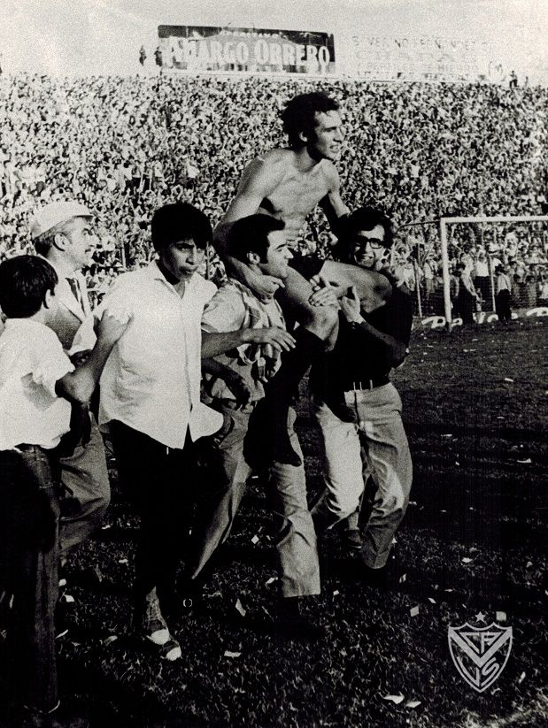
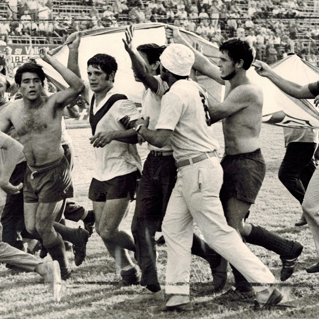
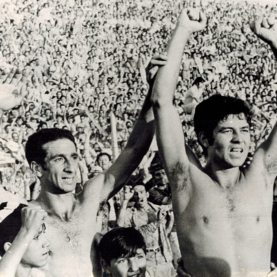

El Club Atlético Vélez Sarsfield fue fundado el 1 de enero de 1910 en los túneles de la estación de tren "Vélez Sarsfield" (hoy estación Floresta) del Ferrocarril Oeste en Buenos Aires. Surgió como una "sociedad sportiva" impulsada por jóvenes como Nicolás Martín Moreno, Julio Guglielmone y Martín Portillo, buscando un nombre que homenajeara al autor del Código Civil argentino.
Vélez fue campeón por primera vez el 29 de diciembre de 1968. El equipo ganó 10 partidos, marcó 39 goles y logró su mayor goleada de la temporada al vencer por 11 a 0 a Huracán de Bahía Blanca. Además tuvo al máximo artillero del campeonato, Omar Wehbe con 16 tantos.



Velez Campeon 1968.